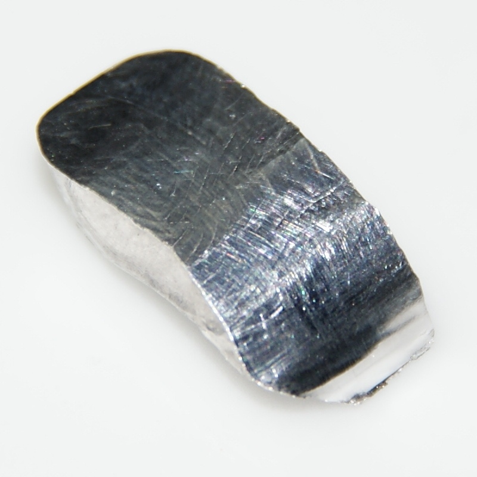

| Proprietà |
Valore |
| Nome Elemento |
Indio |
| Simbolo |
In |
| Appartenenza al Gruppo |
13 |
| Numero Atomico |
49 |
| Massa Atomica |
115 u |
| Numero di Isotopi |
30 (solo 2 stabili) |
| Temperatura di Fusione |
157 °C |
| Temperatura di Ebollizione |
2072 °C |
| Densità |
7,31 g/cm³ |
| Elettronegatività |
1,78 (Scala Pauling) |
| Anno di Scoperta |
1863 (Ferdinand Reich) |
| Caratteristiche |
- Resistente all’ossidazione.
- Usato in elettronica per la produzione di schermi.
|
| Principali Paesi Produttori |
Cina, Giappone, Corea del Sud, Tanzania, Perù, Bolivia. |
| Effetti sulla Salute |
- Relativamente non tossico, ma può causare danni ai polmoni e al sistema nervoso a concentrazioni elevate.
|
| Effetti sull'Ambiente |
- Può contaminare suolo e risorse idriche.
- Tossico per alcuni organismi acquatici.
|
